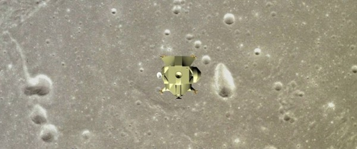

There is an idea to make an animation film on the script there. Accordingly, I am looking for producer for this.
You can read about it in detail here (into Russian).
A science-fantastic movie
Characters in the play: Fritz (a pilot of NASA), John (an universal doctor and a biologist-researcher), Vladimir (Russian 3D specialist. His object is an effective 3D TV translation from Mars).
John comes to Fritz' home. Fritz is watching a 3D channel on a screen of 3D TV set.
- Hello! What do you watch? Do you watch a 3D TV channel?
- Yes. No question, a 3D television is interesting, sometimes a picture is very voluminous. You are not viewer of 3D TV channel to no purpose! At all, it is necessary to relax more often, to be on holiday sometimes. My training takes the all my time, often I can't watch a TV set...
- My friend, who is guilty of that? If you wish to be "A Number One" then you must bear the heavy load.
- Of course, you are right. It is a result of that choice that I have made every day. As you have known, I set the aim in my life, and, I am sure, I shall achieve my aim! Yes, my life is a penal servitude... But I choice such life every day again and again. If I can to act, then I am acting! Because I want to be myself.
- That's it! The typical example of purposeful maniac. You agree? :)
- Agreed! :) Please, about 3D television... Why all films are 3D in cinema theatres while only single TV channel is 3D?
- Probably, a monopolization of economy is a cause of it. The First National Broadcasting Company (FNBC) overwhelms all 3D channels. At all, there are very a few good 3D specialists in the world.
- Where is the antimonopoly committee?
- In the first place, they like to watch this channel too. In the second place, the FNBC comes under the amendment about effectively working monopoly concerns. Generally, there is no someone that had brought legal action against them.
- Clearly...
- By the way, I have come to congratulate you on assignment by a commander of crew.
- From what source the information is?
- I have very secret sources, I know everything. It is a solved point. Believe me. Also, this secret source reported me about some space tourist that we must carry along. It is a political decision. He is Russian 3D specialist; his object is an effective 3D TV translation from Mars. It is an additional problem for me because he has a weak health. What do you think about it?
- I don't like Russians. This civilization is going under, they hate the all around that is living...
- My friend, it is a stock phrase of Hollywood, no more. This civilization is in such cultural condition during of last 1000 years, as minimum. Of course, it is impossible to live like this... But they are living. It's fact. Consequently, it is possible. Incidentally, we shall fly by a Russian spaceship. That is why I recommend you to hold your tongue. Please, don't speak too much with this Russian. He arrived from Moscow recently. Let's go to acquaint with him!
- Wait a little, John. Let me to have a cup of tea and a sandwich! Just at that moment Francoise (a wife of Fritz) has come in the room. She has brought a tea-tray with a teapot and cups and sandwiches.
- Also, by the way we must make a visit to a Russian space centre on the Moon; the visit is an obligatory element of our show. I believe that it will be very interesting for you to take a look at this wonder of engineering by your own eyes.
- At all, what for the Russians have built the space centre on the Moon? - Fritz is chewing a sandwich. - A radio telescope is able to work automatically. What for they have built an inhabited base? And what for they have built "The Bubble" (a space greenhouse)?
- The Russians have made all right; they displaced their presence in the Antarctica but they opened their presence at the Moon. In principle, it is not more expensive. But it is more effective. As you have known, the last economic crisis has brought up the question about the equivalent value of dollar again. It is necessary to surmount a credibility gap constantly. In the matter of question, a structure of global economy is: American works press money, Russian works press spaceships, Chinese works press the all other. It became clearly that the United States and the Russia are losing their space leadership after launching of Chinese space station. It is necessary to be "A Number One" on the Earth to have got a good salary. It is necessary to become "A Number One" in the space in order to be "A Number One" on the Earth. That is why we have spent a big money on our space programme; it is a gainful business for us. What engine have the Russians? I don't know. Probably, it is their pride. The people lives poorly, nevertheless they are first in the space. I can't understand it!
- Yes, I can't understand it too. - Fritz is standing up. - OK! Let's go! They come out, they get into an automobile and go by the automobile along a straight highway. They go through Arizona wilderness; there are mountains far away at each side of motor road.
John and Fritz come to the Kennedy Space Center. Their colleague Larry welcomes them.
- Hello Larry! - When John salutes in the first instance then, no doubt, a provocation will be. - How are you?
- Hello John! Thank you! I am OK! And what about you?
- Unfortunately, my favorite cat is died. She ate a rat that was ill with a "swine influenza".
- You are serious?
- I am in jest!
- Why it is not possible to greet normally with you at any time? Your jokes are not fine... - Hello Fritz!
- Hello Larry!
They all are going along a corridor.
- I shall introduce you to Russian now. Larry is speaking with John. Please, joke with him, no me.
- Excuse me, Larry!
The company comes in a large laboratory. A young man 30 years of age (or a little more) is standing up from chair.
- Vladimir, let me to introduce my friends: he is Fritz and he is John. [Larry is introducing our heroes to Vladimir] He is Vladimir. Vlad is a Russian 3D specialist. He will speak about himself and his special apparatus in a few words.
- Hello! My name is Vladimir Klimov. I was born and grew up in the city Barnaul, Siberia region. I graduated a biological faculty of Altai State University. I elaborated a theoretical base of modern 3D television. Agreeably with my theory I made a special device "Teleport-1M". Vladimir goes up to an "electronic head" that is set on tripod. This apparatus can record a stereoscopic picture and a binaural sound track synchronously.
- It is interesting... - John is trying to support a dialogue.
- Of course, the 3D TV channel broadcasts generally a 3D substitute that is like natural one only a little but his great future is clear already today. That is why they have made a decision about a TV translation from Mars into a 3D format. I would like to inform you about base principles of my device in a few words.
- Yes, be so kind. - John nodded.
- The apparatus is a plastic box that has a shape of human head. The box has two full HD cameras and two high quality microphones inside. Signals from cameras and microphones go to a compact computer that contains a special synchronizer and a memory block. The system has an autonomous energy supply from an accumulator battery. The apparatus is full automatic and it is very simple to act: it has a single button "on/off" only. One thing more that is needed to remember for a TV reporter is: the reporter must not go up to apparatus nearer than 2 metres. An object will appear in front of TV screen if the object is located nearer than 2 metres to the "Teleport-1M" during shooting. NOTE: You must hold this object framed as a whole. It means that you can extend your hand forward to audience, but not your body. Generally, it is the all information that is required to work with my apparatus.
- Is it possible to test it just now? - Fritz likes to become familiar with new machines without reading instructions.
- Yes, of course. - Vladimir was thinking a little. He moved a tripod with the apparatus to a new point of room, he took a small bust of Lincoln from a writing table, he gave the bust to Fritz' hands, he turned on some additional light and he moved several objects in the background. Thus the laboratory was transformed into a shooting area in a minute. A few minutes later the episode was shot. Fritz has set himself on a chair in front of big TV set, he has put on special 3D glasses. He has seen himself on a screen of 3D TV set. His hand with the bust of Lincoln is extending from the TV to his nose.
- Very good!
We are at a place of starting space rockets Vostochny Cosmodrome (The East spaceport of Russia). The spaceship "Soyuz" with three astronauts is leaving the Earth.
The scene of main crew arriving upon the space station "Mars-1":
We are at the inside of the space station. We have seen opening access door. The Russian 3D specialist Vladimir is coming to the audience. He is holding the "electronic head" by his extended hands in front of him. His hands with the apparatus "Teleport-1M" are coming out of screen to the audience. There is a big sunny smile upon his face like the first space tourist Tito had. Shooting camera smoothly moves from Vlad and a part of interior of space station becomes visible. Vladimir is making an awkward maneuver in order to stop his motion and to turn for shooting of arriving of other crew members. There is a small pause there. The ceremonial welcome has come: Fritz (the commander of crew) is surmounting the access door. He holds a small flag of the United States in his hand. Fritz is not coming to the audience but he has fixed himself nearly the access door because he is waiting for John. Then John has surmounted the access door and he has fixed himself side by side with Fritz. Officially, the expedition to Mars is considered American therefore John is glad that Vladimir is busy by shooting and he is "off screen". A flight engineer of space station "Mars-1" and an employee of space station "The Moon-1" are meeting the newcomers.
- Welcome to space station "Mars-1"! Allow me to report! The space station "Mars-1" is in good order and ready to start to the planet Mars! Our intermediate task is connecting to the Moon orbit station "The Moon-2". The report was made by a flight engineer Ivan Petrov!
- Let me to introduce myself! My name is Alexander Kuznetsov. I am an employee of space station "The Moon-1", my profession is a mechanic about a pump machinery. I am going to the place of employment.
After the flight engineer Ivan Petrov has guided the newcomers around the space station.
Following the excursion there was a dinner. A space dinner is an exotic procedure enough; it looks like a degustation of new cosmetic line by experts. The all these variegated packets and tubes... First of all, it is necessary to read about what is inside. Second, it is necessary to smell and to taste the food and to adapt for swallowing of it. Beginners always have an absurd expression on their faces at first dinner. Especially, Vlad has. Of course, John is a beginner in the space too but he has formed a habit to think how he is looking from the outside. As the saying is: "The image is all, the thirst is nothing!" A humorous incident happens at the dinner: Vladimir has thought to shoot how he is drinking an orange juice by a long cocktail pipe. But it is not so easy... The gigantic drop of juice is not standing in the air at the same place. The drop is swaying and the drop is changing her shape and the drop is slow moving from Vlad. The cause is: he has not considered a movement of air along the space station. The drop of orange juice is coming out of screen to the audience. One from astronauts found the solution of problem in a moment: a vacuum cleaner was turned on and the juice was drawn back.
It is in process of translating...

"Final scene of film":
 to download
to download the reel (147 MB)